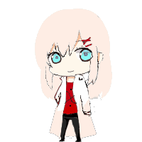

首頁
Page 1
Page 2
Page 3

焰‧奇雷洛亞：有著偏紅的銀白色頭髮，淡藍色的瞳孔，外貌年齡是18歲，真實不明，超級討厭六代創世(父親)， 總是喊他垃圾、廢物之類的，喜歡藍(但是自己不知道)和久野作(對久野作的感情是信任)，討厭自己真正的名字，所以從來不使用，並不喜歡甜食，但喜歡甜甜圈 (尤其是久野作做的)，最常喝的飲料是咖啡，現在基本上都只待在亞西雷，沒有人類的情感，只知道基本的喜怒哀樂，其餘的通通不懂， 所以並不明白為什麼想一直待在藍的身邊，曾向許多人提問過這個問題，然而他人總是對焰說:"你不需要明白"，最後只有久野作好好的回答了問題，然而焰仍然不明白。
不怎麼喜歡人類，但不排斥與人類相處，所以同意久野作的兒女們(領養的)住在自己的家裡，而久野作的女兒(無血緣)"冶"和"辰"是最接近非人的存在， 也就是接近世界法則的存在，尤其"冶"根本是踩在邊上，所以常會用煉金術製作抑制的物品，試圖阻止她們兩人進入非人類的世界。